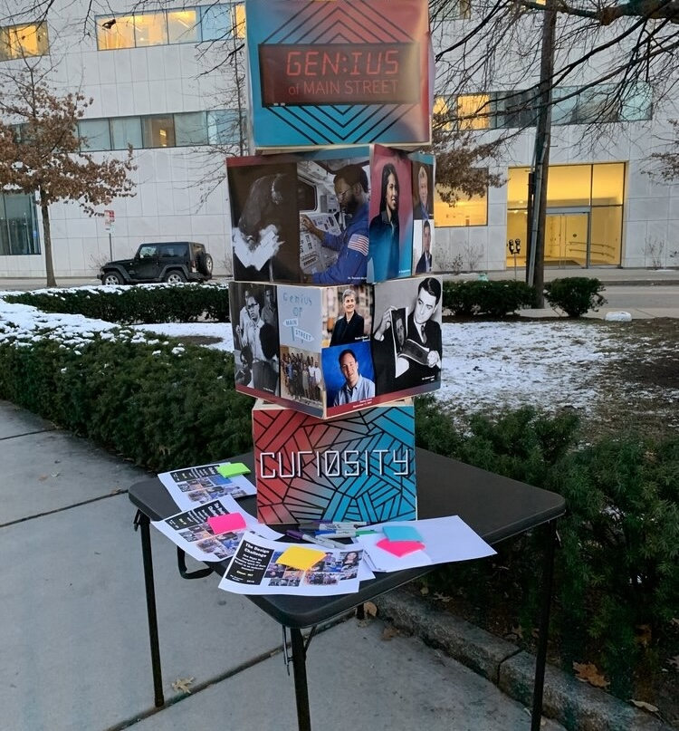
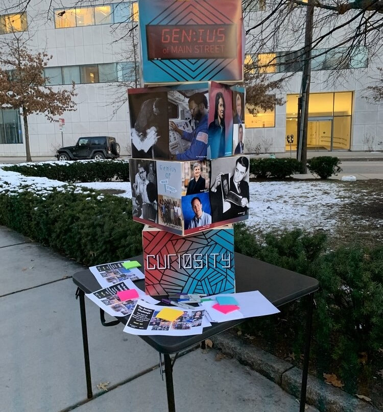

The Genius Within
The Challenge
How Might We recognize the
inventive spirit of Cambridge in an
inclusive manner?
Client
MIT
Timeline
2018-present
Inspire. Diversify.
Innovate. Visualize.
Although the project is still in development, our aspiration is for visitors to be inspired by the diversity of individuals who have played a part in making Kendall Square the most innovative square mile on the planet. Most importantly, we have included mirrors to encourage visitors to see themselves as a part of Kendall’s future.
Started in 2018.
While conducting research for the Looking Glass, we stumbled upon the Entrepreneur’s Walk of Fame in Kendall Square. Created in 2011 and patterned after the Hollywood Walk of Fame, it was meant to recognize trailblazers in the information age.
Seven of the brightest minds in the history of business were recognized, including Bill Gates, Bill Hewlett, Bob Swanson, David Packard, Mitch Kapor, Steve Jobs and Thomas Edison. The goal was to keep such innovative figures alive in the minds of students, tourists, and curious passersby.
Frozen in Time.
The plan was that more names would be added each year, but it never came to be. What kind of message was being communicated? One could only hope that by now a woman or person of color would have been honored on the walk.
iFp was founded to inspire high potential diverse young people to develop the skills and mindsets to become a part of the innovation economy. It was obvious what our next project would be.
In 2018, we partnered with MIT to tell the story of Cambridge’s inventive spirit in a more inclusive manner. From the first center-aisle train car to Thomas Watson and Alexander Graham Bell completing the first phone call, to invention of the Polaroid camera, and now home of incredible innovative biotech startups, Main Street has been the central artery of Kendall Square.
One doesn’t have to wander to far from the main boulevard to discover stories like Dr. Ronald McNair MIT-trained physicist and astronaut tragically killed in the failed Space Shuttle Challenger mission. He would walk across Main Street several times per week to teach karate class at St. Paul AME Church in the Port neighborhood in Cambridge. The Port is the most economically challenged neighborhood in Cambridge. Our installation will honor Dr. McNair and others who have helped Kendall Square become know as the most innovative square mile on the planet.
Research. Ideate.
Collaborate.
Students work collaboratively with designers, technologists, makers and other professionals to bring new-to-the-world ideas to life. The resulting products / experiences are fresh and cutting-edge with a youth inspired vibe.
“iFp’s design approach is a great way for MIT to build authentic relationships with the next generation of innovators. We are grateful to the young people at iFp for providing a fresh perspective to our built environment.”
— Amanda Strong, Director Asset Management MIT Investment Management Company
Design with Purpose.
Design Inspiration and Early Development
Place holder
 

Color
Our color palette was inspired by the booming tech and biotech industry, paired with warmer futuristic tones.
Layout
We wanted a layout that was accessible and made sense in the design. We took into account the mirror placement and what spot would be easiest for people of all heights to reach.
Persevere.